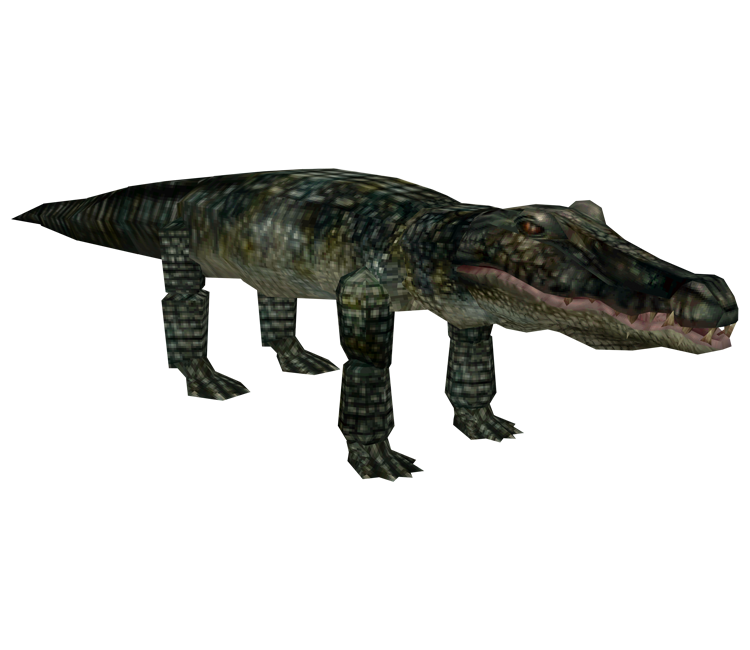

|
 |
|
| Información general | |
| Nombre | Caimán |
| Base | Reptil |
| Tipo | Infección secundaria causada por el virus T |
| Longitud | Hasta aproximadamente 10 m |
| Fecha de creación. | 1998 |
| Fuente: Resident Evil Wiki | |
Origen
Es un enemigo enorme y bastante resistente que habita en las alcantarillas de Raccoon City en la zona del vertedero. Puede aparecer en el escenario A y en el B. En el escenario B aparecerá si este se escapa en el escenario A.
Participación en la historia
En el juego, el caimán gigante es un enemigo que aparece en las alcantarillas de Raccoon City. Los jugadores deben enfrentarse a él para avanzar en la historia y escapar de las alcantarillas.
Tácticas
Cuando aparezca el caimán, lo más recomendable es huir de la criatura hasta llegar al tanque explosivo en la pared. En ese lugar se deberá esperar a que aparezca el caimán y usar el tanque, el cual caerá de la pared y será agarrado por el caimán, en ese momento se deberá disparar al tanque y este explotará matando a la criatura. También se puede luchar contra la criatura sin hacer uso del tanque explosivo, en este caso se deberá atacar con armas pesadas como el lanzagranadas de Claire o la magnum de Leon . Después de varios disparos, la criatura romperá una pared y huirá por ella. Si esto ocurre, el caimán reaparecerá en el escenario B.
Curiosidades
- Originalmente aparecerían en Resident Evil 1.5, iban a aparecer varios de ellos merodeando los túneles de las alcantarillas, aunque estos serían más pequeños que la versión final de Resident Evil 2.
- El caimán gigante que habita en las alcantarillas fue inspirado posiblemente de la película Bestia Bajo el Asfalto.
- Es posible vencerlo con el cuchillo con mucha paciencia y estrategia.
- Si es vencido sin usar el tanque explosivo en el escenario A, en vez de morir, abrirá un muro en la pared y se irá y volverá a aparecer en el escenario B.